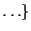

Fitnesslandschaft |
auch Gütegebirge,
Metapher zur Verdeutlichung der Abhängigkeit der Fitness, bzw. Zielfunktion,
von der Lage des Individuums im Suchraum |
fitness-proportionale Selektion |
Zufallsselektionsverfahren, wobei die Selektionswahrscheinlichkeit
für ein Individuum proportional zu dessen Fitness ist. Die Fitness muß
daher nichtnegativ sein
(Skalierungsfunktion).
Als Evolutionsziel
ist nur die Maximierung möglich. |
Fortschrittsgeschwindigkeit |
theoretisches Performancemaß, Erwartungswert der Änderung des Abstandes
zu einem vordefinierten Ziel (i.d.R. Optimum) in einer Generation |
Funktionenmenge |
Menge problemangemessener elementarer Funktionen, die als innere Knoten
zusammen mit der
Terminalmenge
einem
GP zum
Bilden eines baumförmigen Individuums zur Verfügung stehen. Beispiele für
F. sind arithmetische Operationen und mathematische Funktionen
+, -, *, /, sin, cos
für die symbolische Regression oder
Elemente einer
Programmiersprache if-then-else, for, do-until, 
für das
Bilden von
Programmen. |